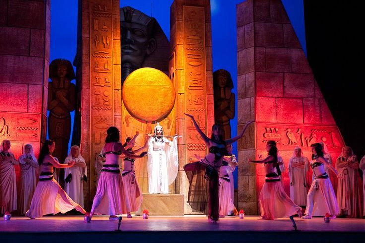
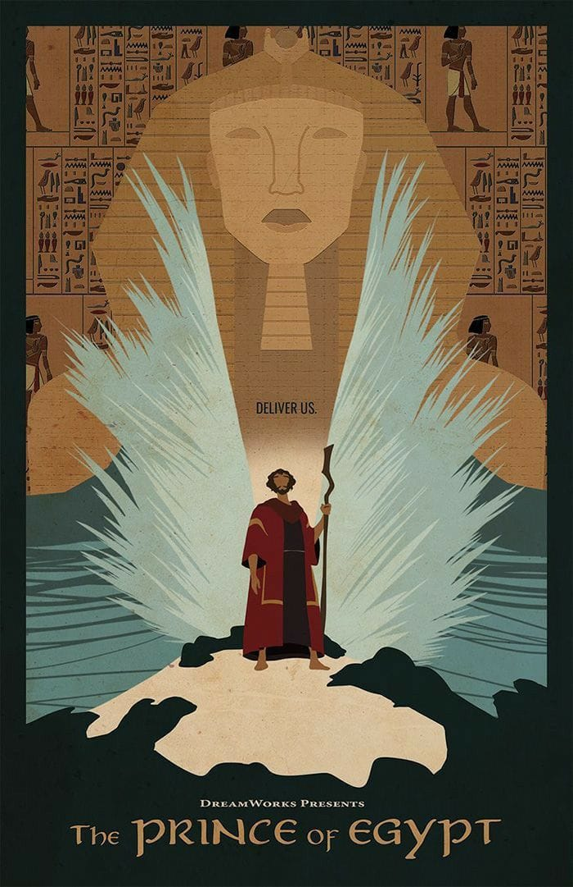

Una historia de familia, libertad, fe y liderazgo que sigue el camino de Moisés desde el palacio de Egipto hasta el éxodo del pueblo hebreo.

El musical The Prince of Egypt está basado en la película animada de DreamWorks de 1998 y en la historia bíblica del Éxodo.
La versión teatral amplía la historia de Moisés y Ramsés y presenta nuevas canciones junto con algunas de las piezas más conocidas de la película.

">La película animada The Prince of Egypt fue estrenada en 1998. Cuenta la historia de dos hermanos criados en el palacio egipcio que terminan enfrentándose cuando Moisés descubre su verdadero origen.
Moisés y Ramsés crecen juntos dentro de la familia real egipcia. Aunque pertenecen a orígenes diferentes, durante su infancia desarrollan una relación cercana como hermanos.
Con el paso del tiempo, Moisés descubre que en realidad es hebreo y que fue separado de su pueblo cuando era un bebé para salvarlo de la orden del faraón.
Después de abandonar Egipto, Moisés recibe el llamado de Dios para regresar y liberar a los hebreos de la esclavitud.
El regreso de Moisés provoca un conflicto con Ramsés, quien ahora es el faraón. Moisés debe enfrentarse a su antiguo hogar para cumplir la misión de liberar a su pueblo.
La historia culmina con el éxodo de los hebreos y el cruce del Mar Rojo, uno de los momentos más importantes de la historia.
| Año | Evento | Importancia |
|---|---|---|
| 1998 | Película animada | DreamWorks presenta El Príncipe de Egipto. |
| 1998 | Banda sonora | Las canciones de la película reciben gran reconocimiento. |
| 2000 | Premios Óscar | "When You Believe" gana el Óscar a Mejor Canción Original. |
| 2017 | Musical teatral | Comienza el desarrollo y presentación del musical escénico. |
| 2020 | West End | El musical llega a Londres. |
| Número | Canción | Versión | Personaje(s) |
|---|---|---|---|
| 1 | Deliver Us | Película | Moisés, Miriam y hebreos |
| 2 | All I Ever Wanted | Película | Moisés |
| 3 | Through Heaven's Eyes | Película | Jetró y pueblo madianita |
| 4 | Playing with the Big Boys | Película | Hotep, Huy y Moisés |
| 5 | The Plagues | Película | Moisés y Ramsés |
| 6 | When You Believe | Película | Miriam y Séfora |
| 7 | For You | Musical | Elenco |
| 8 | Dance to the Day | Musical | Elenco |
| 9 | All I Ever Wanted | Musical | Moisés |
| 10 | Through Heaven's Eyes | Musical | Jetró y Moisés |
| 11 | The Plagues | Musical | Moisés y Ramsés |
| 12 | Faster | Musical | Ramsés y elenco |
| 13 | All I Ever Wanted (Reprise) | Musical | Moisés |
| 14 | When You Believe | Musical | Miriam y Séfora |
| 15 | Deliver Us | Musical | Hebreos |
| 16 | The Burning Bush | Musical | Moisés |
| 17 | When You Believe (Reprise) | Musical | Elenco |
Una de las escenas musicales más importantes de la película es The Plagues / Las plagas, donde Moisés y Ramsés se enfrentan mientras se muestran las consecuencias de las plagas de Egipto.
▶ Ver "The Plagues" en YouTubeUna de las canciones más reconocibles relacionada con la historia de Moisés y la esperanza es When You Believe.
▶ Ver "When You Believe" del musical en YouTubeLa versión cinematográfica presenta esta canción como una expresión de esperanza después de las dificultades.
▶ Ver la canción de la película en YouTube| Personaje | Papel | Relación con la historia |
|---|---|---|
| Moisés | Protagonista | Descubre que es hebreo y se convierte en líder de la liberación de su pueblo. |
| Ramsés | Faraón de Egipto | Hermano de crianza de Moisés y principal figura del conflicto. |
| Miriam | Hermana de Moisés | Reconoce a Moisés y mantiene una conexión con sus raíces hebreas. |
| Aarón | Hermano de Moisés | Forma parte de la familia de Moisés y participa en la liberación. |
| Séfora | Esposa de Moisés | Acompaña a Moisés y representa la nueva vida que encuentra lejos de Egipto. |
| Jetró | Suegro de Moisés | Recibe a Moisés en Madián y le enseña una nueva forma de entender su vida. |
| Seti | Faraón | Padre de Ramsés y padre adoptivo de Moisés. |
| La Reina Tuya | Reina de Egipto | Figura materna de Moisés y madre de Ramsés. |
| Hotep | Sacerdote egipcio | Sirve a los dioses egipcios y participa en el conflicto con Moisés. |
| Huy | Sacerdote egipcio | Trabaja junto a Hotep y participa en los acontecimientos relacionados con Moisés. |
| Dios | Figura divina | Llama a Moisés para liberar al pueblo hebreo y guía su misión. |
La película muestra una sociedad egipcia basada en la religión del Antiguo Egipto. Los sacerdotes Hotep y Huy representan el culto egipcio, mientras que la historia de Moisés se centra en el Dios de los hebreos.
Ayuda a Moisés a llegar hasta el otro lado del Mar Rojo. Usa las flechas del teclado o los botones si estás en celular. Recoge las columnas de luz y evita las rocas.
Puntos: 0 Vidas: 3
Presiona "Iniciar éxodo" para comenzar.
🏺 El objeto perdido: En la historia, Moisés pasa de vivir como príncipe de Egipto a descubrir que su verdadera identidad está relacionada con el pueblo hebreo.
🌊 El momento del agua: El agua aparece varias veces como símbolo de vida, peligro, cambio y liberación.
🔥 La zarza ardiente: Es uno de los momentos que cambia completamente el destino de Moisés y marca el inicio de su misión.
👑 Dos hermanos: La relación entre Moisés y Ramsés es uno de los elementos emocionales más importantes de la historia.
🐍 El poder de Egipto: Los sacerdotes egipcios representan la religión y el poder del palacio frente a la nueva misión de Moisés.
🎨 Color del desierto: Los tonos dorados y azules representan dos espacios que se enfrentan constantemente: el Egipto del palacio y el desierto del éxodo.
💡 Dato especial: La canción When You Believe expresa la idea de mantener la esperanza incluso cuando todavía no se puede ver el resultado.
El Príncipe de Egipto — una historia sobre descubrir quién eres, encontrar tu propósito y luchar por la libertad.